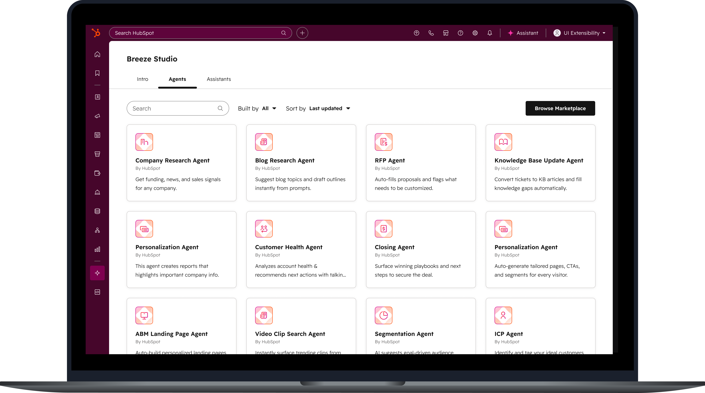
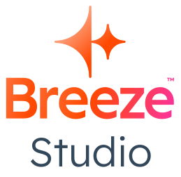
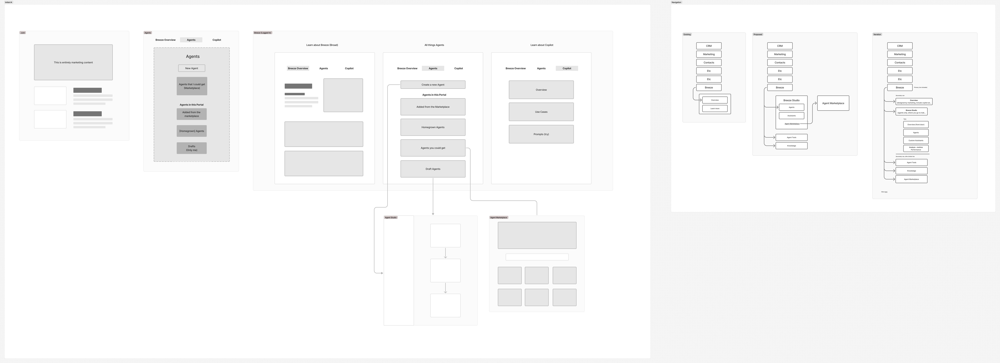

Building HubSpot's agent platform from the ground up
Role: Design Manager. Led direction-setting, cross-functional alignment, and IC work on the runtime experience, while coaching the design team through a zero-to-one build.


By late 2024, HubSpot had built multiple AI agents across different backends. They worked in isolation, with no awareness of each other and no shared infrastructure. Engineering proposed consolidating all agents onto a single platform, with Breeze Studio as the frontend for building, running, and managing them. Internal teams could migrate existing agents and build future ones on the platform, and eventually customers could do the same. From a design perspective this was zero to one: even though we had agents, we had no existing prior art for building and running them.
I was design manager for the project but operated as a player coach throughout. I set design direction, ran alignment across a growing team of designers and PMs, coached my reports, and at key moments stepped in as IC to move the work forward or raise the quality bar. The scope grew to include agent building, agent runtime, tools, knowledge, marketplace, and the connective tissue threading it all together.
With so many interdependent surface areas in motion, we risked the end-to-end experience becoming fragmented. To address this I:

The prototype became a key alignment tool: used internally to spot gaps, shared with engineering as a north star, and shown at an all-product meeting that gave people a clear picture of what we were building toward for Inbound 2025. Until that point, the scale of the scope had made progress hard to see. The weekly session continued beyond the initial build, used to drive further improvements and align dependent teams such as marketplace and navigation.
The initial runtime design used collapsible panels. We felt this could be improved: panels opening and closing automatically created too much movement, making it hard for users to orient themselves. As we were spinning up a new team and hiring a dedicated designer, I stepped in as IC to explore a different direction.
To address this I:
The designer who joined the runtime team took that direction and executed it well.
The design team was working in new territory with a large and growing scope. My coaching focused on two things:
On craft, I worked to keep the quality bar visible throughout. That meant regular design reviews and 1:1 feedback sessions, bug bashes as we got closer to launch, and Looms shared with both design and engineering showing what good looked like and where we could improve. Competitor examples were a regular reference point, used to show what better could look like rather than just describing it.
As we approached Inbound, supporting pages still needed to be designed for cohesion: an overview page and an intro and onboarding experience. Rather than pull my designers away from the core work, I took these on myself, used design system frameworks and templates to move quickly, and liaised directly with engineering to get them built under a time crunch. This kept the team focused on the core building and runtime experience.
Breeze Studio shipped at Inbound 2025. Key results:
The fuller vision, getting internal teams to migrate their existing flagship agents onto the platform, was still in progress. Some of that was functional and some of it was organisational, requiring resolution above our level.
Building a platform from zero in a space moving as fast as AI agents required constant recalibration. The biggest lesson was knowing when to push for strategic clarity and when to design forward anyway. There are always simplifications to be found, and that work continues.
This project continues. In January 2026, Breeze Studio began unification with HubSpot's automation platform. In June 2026 we launched a private beta to capture customer feedback on the new builder and management experience.